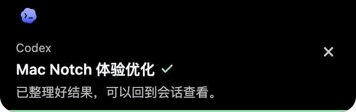
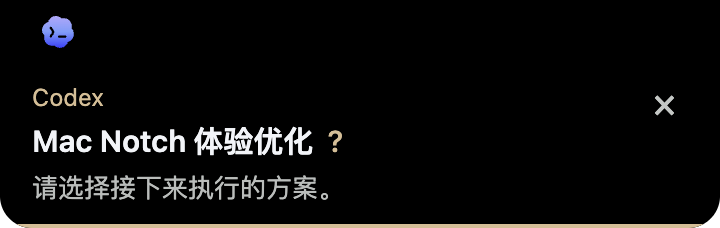

任务完成，提醒你看结果
通知直接显示会话名和本轮结果。点一下回到客户端，不用反复切窗口确认进度。
Claude、Codex 和 WorkBuddy 完成任务、需要你回答时，从 Mac 顶部提醒你。任务状态与剩余额度，抬眼可见。


正在制作产品官网
页面设计与功能实现Claude97%5 小时额度
Codex84%5 小时额度
示例数据，不读取你的账号。
交互演示 · 点击「需要协助」或「已完成」预览通知；为方便阅读，网页预览不会自动收起。

通知直接显示会话名和本轮结果。点一下回到客户端，不用反复切窗口确认进度。

Codex 等待你选择或补充信息时，通知展示待回答的问题。关闭通知不会把问题当作已回答。
进行中?需协助已完成在屏幕顶部查看进行中、需协助和已完成状态。
97%84%空闲时默认在刘海条显示剩余额度，双击查看日／周／月用量趋势。
单击打开客户端，右击打开控制页，双击查看额度。右击与双击可在控制页交换。
1/3查看一个任务后，其他任务的提醒仍会保留。
发给 Codex 或 Claude Code 帮你安装，或在 Mac 的终端中运行。
curl -fsSL https://a1014709897-sketch.github.io/mac-notch/install.sh | bash支持 Apple 芯片（M 系列）和 Intel Mac，要求 macOS 13 或更高版本；安装命令会自动选择对应架构。没有刘海的屏幕也能显示状态条，多任务计数会按需扩宽。Intel 版为体验包，欢迎反馈真机兼容性问题。
Mac Notch 免费开源，不需要注册账号。额度查询使用你已有的 Claude 或 Codex 订阅。如果没有获取 Claude 状态，请运行 Claude Code CLI（claude），完成订阅账号登录后刷新。查看登录说明
可以。首次打开时选择你使用的工具，之后也能在设置中分别开关。关闭的工具不会再显示图标或查询额度。
“需要协助通知”与“任务完成通知”可分别开关，控制页提供效果图和预览按钮。通知标题显示会话名，完成时附绿色勾，待协助时附金色问号。Codex 协助通知正文显示当前待回答的问题，部分回答后只保留剩余问题；取不到问题正文时使用通用提示。关闭通知不会把问题当成已回答，重新开启也不补弹旧问题。
完成通知默认开启，可在设置中关闭；关闭后保留任务状态，重新开启不补弹旧通知。完成通知默认显示 5 秒，协助通知显示 8 秒，悬停暂停。切回对应工具并持续停留约 1–2 秒，会消除该工具已有的完成提醒；这不改变客户端自己的已读状态。通知展开时，顶部任务条的勾和问号会隐藏，收起后按真实任务状态恢复。需要协助时，要实际回应或让任务继续，问号才会消失。
提醒依赖客户端提供的本地状态，暂时不能覆盖所有权限弹窗或远程任务。对应工具在前台时不弹出它的通知；另一个工具在后台仍可提醒。反馈问题
任务记录仅在本机读取，不上传到 Mac Notch 的服务器。额度查询直接连接对应厂商，默认使用系统代理，不改变 Claude 或 Codex 的网络设置。Token 用量只统计本机已有记录，费用是 API 价格估算，不是订阅账单。
刘海条可从 Claude、Codex、WorkBuddy 中任选最多两个，菜单栏可以同时显示三个，开关互不影响。WorkBuddy 读取额度时按需打开网页授权；未完成授权不影响本机任务状态显示。
安装命令会校验安装包，再安装到用户的应用程序目录；不会覆盖已有应用。控制页可检查更新、下载并校验安装包，再打开安装包完成升级；不会自动替换应用。卸载时退出应用并删除 Mac Notch.app 即可，个人配置会保留。查看版本与下载